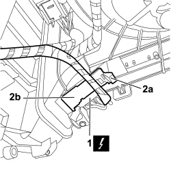
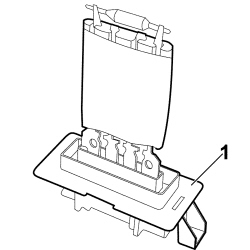

5040C48 A/C FAN MOTOR RESISTOR - R+R
- Path
- Procedures > 50 AUXILIARY UNITS > 5040 AIR CONDITIONING CASING AND COMPONENTS > 5040C AIR CONDITIONING CASING AND COMPONENTS > 5040C48 A/C FAN MOTOR RESISTOR - R+R
- Kind
- repair procedure (removal / refitting; the operation number is the code)
- Applies to
- all engines; all production periods
- Interactive page
- https://sloeber94.github.io/elrnDB-fCrm/en/#/194000621
Applies to: all engines; all production periods
 Removing
Removing
 Refitting
Refitting- Turn the ignition key to the OFF position.
- Disconnect the negative battery terminal.
Description | Connector | |
|---|---|---|
BATTERY |
Op. 5010C55 RIGHT LOWER AIR DIFFUSER - R+R
1. Working under the right side of the dashboard trim, disconnect the electrical connection.
Description | Connector | |
|---|---|---|
1 | PASSENGER COMPARTMENT AIR FAN ADJUSTMENT RESISTANCE | See O030 PASSENGER COMPARTMENT AIR FAN ADJUSTMENT RESISTANCE |
2. Working on the tab (2a) release the resistor (2b) from the mounting.

Applies to: all engines; all production periods
1. Release the resistor downwards and remove it from the fan assembly.

Applies to: all engines; all production periods
Refitting
Removing- Check that the resistor is not damaged or deteriorated.
- Place the resistor in the housing on the fan assembly and make sure that the mounting tab is correctly attached.
- Connect the electrical connection.
Description | Connector | |
|---|---|---|
PASSENGER COMPARTMENT AIR FAN ADJUSTMENT RESISTANCE | See O030 PASSENGER COMPARTMENT AIR FAN ADJUSTMENT RESISTANCE |
Op. 5010C55 RIGHT LOWER AIR DIFFUSER - R+R
- Connect the negative battery terminal.
Description | Connector | |
|---|---|---|
BATTERY |
Topics linked from this page (3)
- 5010C55 RIGHT LOWER AIR DIFFUSER - R+R
- A001 BATTERY
- O030 PASSENGER COMPARTMENT AIR FAN ADJUSTMENT RESISTANCE